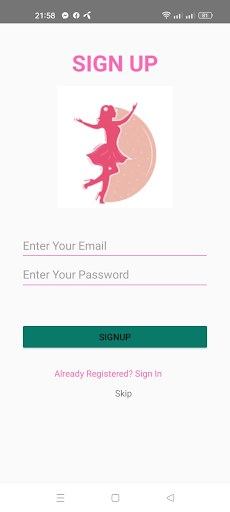
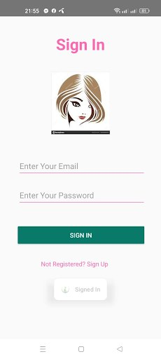
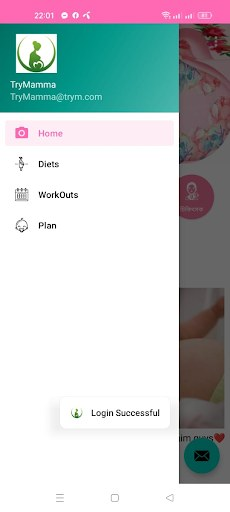
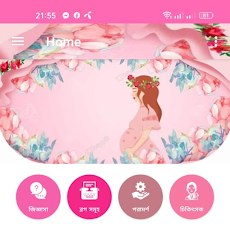
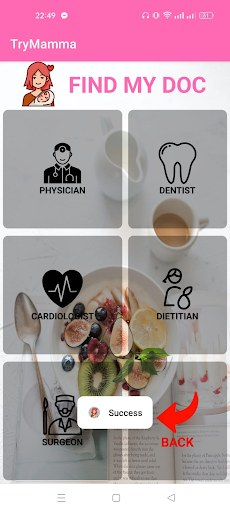
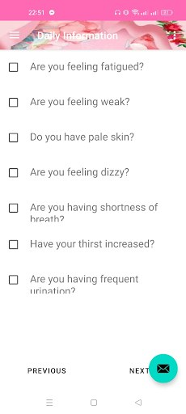
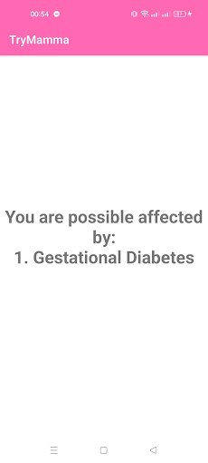
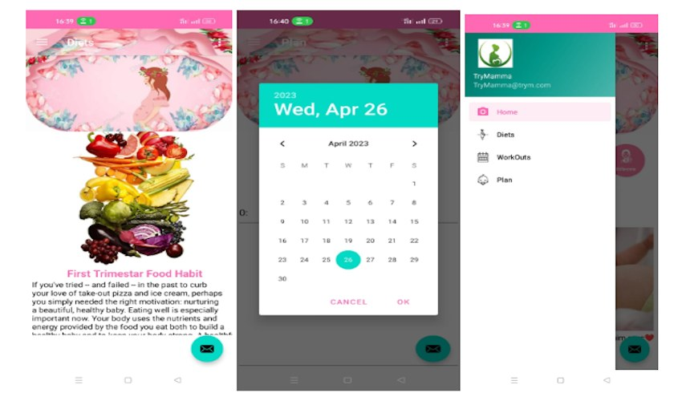

Why
Many expecting mothers in Bangladesh have limited access to regular, reliable guidance between doctor visits. Matritya puts stage-appropriate advice, reminders and a supportive community in one Bangla-friendly app.
Screens








Features
| Module | What it offers |
|---|---|
| Home | Q&A, community blog, doctor posts, direct consultations, 3D fetal visualisation |
| Diet | Food charts by trimester, daily intake tracking, nutrition deficiency alerts |
| Workouts | Short exercise videos for each trimester |
| Health tracker | Symptom input for disease-risk prediction, stored vitals, summaries for doctors |
| Plan | Gestational tracker, reminders for medication and doctor visits |
| Community | Sharing experiences, expert suggestions, peer support |
The app also collects structured health data in a form that could later support predictive models for maternal health.